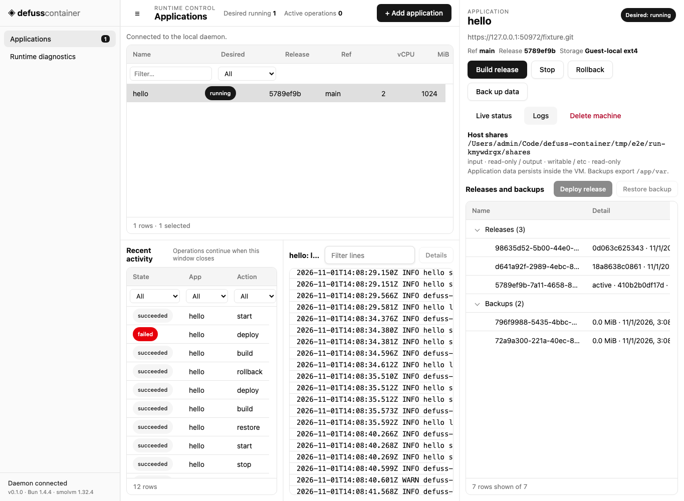

Run each Bun app in its own Linux microVM, on your machine
built from a Git commit with builds kept off the host behind a health check with data on the host disk with backups and restore with a CLI and a desktop app
defuss-container builds an HTTPS Git repository into a Bun distroless image inside a disposable builder VM and runs each application in a persistent smolvm microVM. A user-level daemon keeps applications, releases and jobs in SQLite; the CLI and the desktop app are clients of its loopback API.
Built by Aron Homberg (kyr0) (opens in a new tab) · Open Source (MIT (opens in a new tab))
Repository code runs only in VMs
On the host, Git only fetches and archives. Dependency installs and scripts.build run in a builder VM that cannot reach private networks, and the host checks every path, link, type and size of its output before packaging it.
One persistent VM per app
Each application owns a named machine with the CPUs, memory and disk its spec sets, on KVM (Linux), Hypervisor.framework (macOS) or Windows Hypervisor Platform. A deploy switches the code release; the VM and its data stay.
Deploys you can undo
A deploy waits for the app's health endpoint. A release that fails readiness is replaced by the previous one, which restarts if it was running, and rollback switches back on request. Rollback changes code, not database schemas.
Data that outlives releases
./var lives on the VM's own ext4 disk with full flush durability. Backups archive it while the workload is stopped; restore verifies the checksum and takes a safety backup first.
One daemon, two clients
The CLI and the desktop app call the same HTTP API. Every action returns a durable job at once; jobs outlive both clients, and a daemon restart marks unfinished jobs interrupted and brings each app back to its desired state.
Local by design
The API listens on 127.0.0.1:63705 only, rejects browser origins and rotates its 256-bit token on every start; the token never reaches JavaScript or a guest. defuss-container itself contacts only your Git remote, Docker Hub and, from the builder VM, the npm registry.
Fetch.
Build.
Run.
Every app, release and job at a glance
The desktop app shows each application with its desired state, release and storage, runs every action from build to delete, and keeps the recent jobs in view. Closing it leaves the daemon and the machines running.

Your own services, each behind a hypervisor
defuss-container is a single-user tool for the Bun services you run on your own computer. One daemon owns all state and is the only process that runs Git or the VM engine; the CLI and the desktop app only talk to it.
- HTTP + token
- HTTP + token
- WAL
- argv
- HTTPS
- boot
- boot
- Daemon and app VMs
- Upstream services
A microVM per app
Each app runs under its own Linux kernel, so the boundary between apps and host is the hypervisor, and the host needs no Docker or Podman. It is no sandbox for hostile code: apps have outbound network access and reach host services through host.
One daemon, thin clients
Builds, deploys and backups run as jobs that outlive the window that started them. One API serves the CLI, the desktop app and the end-to-end suite alike; a library in each client would need its own locking and lifetime rules.
The engine CLI, not the SDK
The smolmachines SDK documents Linux and macOS only; the smolvm 1.32.4 CLI also covers Windows. Every flag the adapter passes was checked against the pinned macOS binary's help output.
Releases switch, machines stay
A deploy selects a release through a host-private launch file and a read-only share, then restarts the machine. ./var stays on its disk, so deploys and rollbacks keep the data; there is no zero-downtime deploy.
From a Git commit to a running app
The daemon fetches one commit, verifies the base image by digest and builds in a disposable VM. It checks and packages the result as an immutable release. A deploy starts that release in the app's own machine and waits for its health check.
- source
- image
- tar layer
- OCI
- deploy
Inside the app VM
The image holds the Bun base, the first release and a runtime layer with the supervisor. On every start the supervisor runs three steps:
-
Verify
Checks the release layer's checksum, extracts it into an empty staging tree and moves it into place.
-
Link
Links
./var,./tmp,./input,./outputand./etcinto the release, empties./tmpand mapshostto the gateway100.96.0.1. -
Start
Runs
scripts.startwithbun execin its own process group. Stop runsscripts.stop, then SIGTERM, then SIGKILL after half the stop timeout.
A workload that exits powers the machine off, so a crashing release fails readiness at once instead of after the 60 s timeout.
Where an app's files live
| Path | Backing | Lifecycle |
|---|---|---|
./var | VM's ext4 disk | Kept across stop, start, deploy, rollback; backed up |
./tmp | Inside the VM | Emptied before every start |
./input | Host share, read-only | Written by you on the host |
./output | Host share, writable | Visible on the host |
./etc | Host share, read-only | Configuration you provide |
Measured, not promised
Measured by make e2e on macOS 26.7.1 with an Apple M5 Max and Hypervisor.framework, with the example app at 2 vCPUs, 1024 MiB and 20 GiB. Job durations come from the daemon's log of one run, memory and disk from the run in VERIFICATION.md. Linux and Windows are not measured yet, and neither is guest I/O (make bench).
Job durations
Each "hello" job of one end-to-end run, from start to end as the daemon logged it. Build v1 downloads the base image and the example's dependencies into an empty daemon cache; deploy v1 creates the VM from the release image.
make e2e runPeak memory per process
Resident set size: from the kernel for the daemon and the CLI, from ps samples every second for VM processes and every 0.5 s for the desktop app, alone and with its 3 WebKit helpers. The app VM's guest used 86 of its 986 MiB; the image import helper is the engine's short-lived VM for a new release image.
make e2e resource sampler; desktop app sampled by handDisk use
Allocated bytes; VM disks and engine templates are sparse files.
| Item | Allocated |
|---|---|
| Installed binaries | 11 MiB |
| Desktop app bundle | 6.1 MiB |
| Engine bundle (30 GiB apparent) | 133 MiB |
| Verified base-image blobs | 58 MiB |
| Each release: app layer 4.5 MiB, OCI image 62 MiB | 66 MiB |
| App VM disk after the run | 169 MiB |
| Engine image seed per new machine image | about 150 MiB |
Backup of the example's ./var | under 0.1 MiB |
Planning a host
Estimates from these runs, not measured limits.
- Memory: budget each app's configured memory plus about 0.25 GiB, and about 0.7 GiB more for a moment while a new release image is imported.
- Disk: one app with three releases came to about 0.7 GiB. A machine that never built before also needs the Bun base image seed, 136 MiB here, so plan about 0.85 GiB.
- Retention: releases, backups and engine image seeds have no retention policy yet.

Want help with your setup?
Aron Homberg, freelance and independent AI researcher, offers consulting services worldwide.
Run your first app
Start the daemon from a checkout and deploy an app with the CLI or the desktop app, or let your coding agent prepare an app for it.
From a checkout
Needs Rust through rustup, a C compiler, Git, Python 3.11 and a hypervisor your user may use. make start builds the binaries, installs the checksummed engine and runs the daemon in the background; make gui also needs Bun 1.4 and the Tauri prerequisites.
git clone https://github.com/kyr0/defuss-containercd defuss-containermake start # daemon on 127.0.0.1:63705make start-cli ARGS="doctor" # engine and hypervisor ready?make gui && make start-gui # the desktop app{ "name": "hello", "repository": "https://github.com/your-org/your-bun-app.git", "git_ref": "main", "mounts": "/absolute/path/to/hello-shares", "ports": [{"host": 8080, "guest": 3000}], "env": {"PORT": "3000"}, "health": {"port": 3000, "path": "/health"}}defuss-container create app.jsondefuss-container build hello # prints a job with its iddefuss-container wait JOB_ID # result holds the release iddefuss-container deploy hello RELEASE_IDdefuss-container wait DEPLOY_JOB_IDcurl http://127.0.0.1:8080/healthThe README lists every command and every app.json field.
Vibe coding
Paste this prompt into your coding agent inside your Bun app. It links the repository, so the agent works from the current application contract.
Make this Bun app deployable with defuss-container: https://github.com/kyr0/defuss-containerRead the Application contract in its README first. package.json needs nonempty scripts.start and scripts.stop and a committed bun.lock; the start script stays in the foreground and binds 0.0.0.0, and the process closes its databases on SIGTERM.Keep persistent data under ./var and scratch files under ./tmp, read from ./input and ./etc, write results to ./output. Scripts run with bun exec in a distroless image, so no bash, curl or other system tools.Add a /health endpoint, then write an app.json with ports, env and health for it.sendScript it
The CLI and the desktop app use nothing but this JSON API on 127.0.0.1. Every request carries the bearer token from connection.json, which rotates on each daemon start; requests with a browser Origin are rejected.
Call it, run it
Requests with curl, the development daemon's verbs and the installed login service. Actions are build, deploy with a release, start, stop, rollback, backup, restore with a backup, and delete with confirm set to the app's name. The login service has not been run on any platform yet.
conn=./var/home/connection.json # the make start daemontoken=$(jq -r .token $conn)api=$(jq -r .address $conn) # http://127.0.0.1:63705curl -s -H "Authorization: Bearer $token" $api/v1/appscurl -s -X POST -H "Authorization: Bearer $token" -H 'Content-Type: application/json' -d '{"action":"start"}' $api/v1/apps/hello/actionsdefuss-container api GET /v1/jobs # the same through the CLI's clientmake start # development daemon on ./var/homemake status # running, dead or stoppedmake log # last daemon log linesmake stop # SIGTERM; running jobs finish firstdefuss-containerd --home DIR --engine PATH --port 63705python3 scripts/install.py --service # registers and starts itsystemctl --user status defuss-container # Linuxlaunchctl print gui/$(id -u)/org.defuss.container # macOSStart-ScheduledTask -TaskName 'Defuss Container' # WindowsRoutes
| Method | Route | Result |
|---|---|---|
| GET | /v1/health | Software and API version |
| GET | /v1/doctor | Engine version, provider, hypervisor checks |
| GET | /v1/apps | Registered apps |
| POST | /v1/apps | Register an app spec; 201 |
| GET | /v1/apps/{name} | App record and observed engine state |
| GET | /v1/apps/{name}/releases | Successful builds |
| GET | /v1/apps/{name}/backups | Backups with checksums |
| GET | /v1/apps/{name}/logs | Last 200 workload log lines |
| POST | /v1/apps/{name}/actions | Queue an action; 202 and a job |
| GET | /v1/jobs | Most recent 200 jobs |
| GET | /v1/jobs/{id} | One job record |
| GET | /v1/jobs/{id}/log | The job's command log |
Errors are {"error":{"message":"..."}} with 401, 403, 404, 409 or 400. docs/API.md has the full contract.
Your Bun services, each in its own microVM
Built from a Git commit in a disposable VM, deployed behind a health check, backed up and restored on your own machine.
MIT licensed · release 0.1.0, the first source release